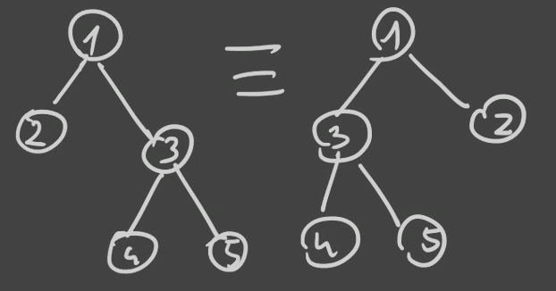
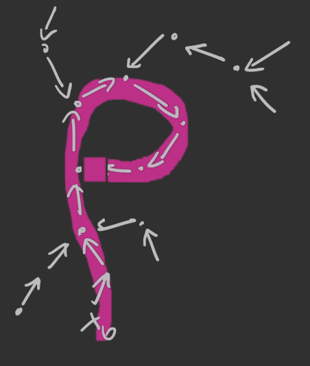

1. Struktury etykietowane
Obiekt etykietowany to graf o n wierzchołkach, w którym każdy elementy ma unikalną etykietę ze zbioru {1,…,n}.
Czyli jak wcześniej mieliśmy Z1×Z2, która zawierała tylko jedną parę (∘,∘) to tutaj zaczynamy rozróżniać te dwa elementy w parze — każdy element dostaje etykietę.
2. Klasa kombinatoryczna (etykietowana)
A={A,∣⋅∣,β}
gdzie ∀a∈Aβ:a→{1,…,n}.
3. EGF
A(z)=∑α∈A∣α∣!z∣α∣=∑n=0n!Anzn
gdzie An=n!⋅[zn]A(z).
4. Przykłady
4.1. Przykład
- Z={(1),∣(1)∣=1,β}Z(z)=z
- E={ϵ,∣ϵ∣=0}E(z)=1
Zobaczmy SEQ(Z)≅P
mamy ϵ(1)(1,2);(2,1)(1,2,3);(1,3,2);…(3,2,1) (czyli faktycznie n!)
P(z)=∑n≥0n!n!zn=1−z1
4.2. Przykład (Urny)
Ile jest urn, które zawierają i elementów?
- ϵ
- (1)
- (1),(2)
- (1),(2),(3)
- …
zawsze jest tylko jedna taka urna, czyli ciąg un=(1,1,1,1,…).
EGF: ∑n≥0unn!zn=∑n≥0n!zn=exp(z).
4.3. Przykład
Ile jest cykli z etykietowanymi elementami?
- 1: (1)
- 1: (1)→(2)→(1)
- 2: (1)→(2)→(3)→(1)(1)→(3)→(2)→(1)
- 6: (1)→(2)→(3)→(4)→1…
Możemy zauważyć, że permutujemy n elementów. Jedyne co to jeszcze możemy dowolnie przesuwać otrzymane sekwencje, bo rozmawiamy o cyklach, czyli mamy ich nn!=(n−1)!.
Czyli EGF: C(z)=n≥0∑n!(n−1)!zn=n≥0∑nzn=ln1−z1
5. Produkt etykietowany (star product)
Mając dane dwie klasy etykietowane A oraz B,
A⋆B to klasa uporządkowanych par (a,b) takich, że a∈A oraz b∈B, poetykietowanych tak, że został zachowany porządek względny.
5.1. Przykład
Mamy - A=(A,∣⋅∣,γ1) - B=(B,∣⋅∣,γ2) - A⋆B=(A×B,∣⋅∣,γ)
Jeśli α∈A, β∈B: - α=(1)–(2) - β=(2)–(1)–(3)
wówczas α⋆β: - (1)–(2)(4)–(3)–(5) - (1)–(3)(4)–(2)–(5) - (2)–(5)(3)–(1)–(4)
Możemy to zrobić na (∣α∣∣α∣+∣β∣) czyli tutaj (25).
Funkcję etykietowaną γ definiujemy w taki sposób, że - ∀x,y∈Aγ1(x)<γ1(y)⟹γ(x)<γ(y) - ∀x,y∈Bγ2(x)<γ2(y)⟹γ(x)<γ(y)
Czyli jeśli ∣a∣A=n oraz ∣b∣B=m wówczas ∣a⋆b∣=(nn+m).
Mając C=A⋆B mamy Cn=⋃{a⋆b:∣a∣+∣b∣=n}=⋃k=0n{a⋆b:∣a∣=k∧∣b∣=n−k}.
Czyli cn=∑k=0nak⋅bn−k(kn).
EGF: C(z)=∑n≥0n!zn(∑k=0n(kn)akbn−k)=(∑n≥0n!anzn)⋅(∑n≥0n!bnzn)=A(z)⋅B(z) co jest bardzo dobre!
Ważne: k!(n−k)!ak⋅bn−k⋅zk+(n−k)=n!(kn)akan−kzn
6. EGF klas pochodnych
Niech - A,B będą klasami kombinatorycznymi - A(z),B(z) będą ich EGF
Wówczas 1. A+B⟺A(z)+B(z) 2. A∗B⟺A(z)⋅B(z) 3. SEQ(A)⟺1−A(z)1 4. CYC(A)⟺ln1−A(z)1=∑n≥1nAn(z) 5. MSET nie działa 6. SET(A)(z)=1+A(z)+2!A2(z)+3!A3(z)+⋯=exp(A(z))
6.1. Przykład (permutacje)
Mamy permutację: 132132465564 Można na nią spojrzeć na następujące sposoby: 1. (3)–(1)–(2)–(6)–(5)–(4) 2. (1)→(3)→(2)→(1)
(4)→(6)→(4)
(5)→(5)
Permutacje określa klasa P=SEQ(Z)P(z)=1−z1
A formę cykli określa klasa P′=SET(CYC(Z)) czyli OGF P′(z)=exp(ln1−z1), ale przecież exp(ln1−z1)=1−z1 — czyli obie sposoby „patrzenia” na permutacje są równoważne.
6.2. Przykład (nieporządki)
Nieporządki to permutacje bez punktów stałych — innymi słowy składają się z cykli o długości większej niż jeden.
Opisuje tę sytuację klasa D=SET(CYC>1(Z)) z OGF D(z)=exp(A(z)) gdzie A(z)=ln1−z1−z, bo odejmujemy ten jeden cykl zwrotny.
Czyli D(z)=exp(ln1−z1−z)=1−zexp(−z).
6.3. Przykład (suriekcje)
funkcje „na”
Mamy {1,…,n}→{1,…,r} gdzie r≤n. Każdy przeciwobraz każdego elementu ze zbioru {1,…,r} jest niepusty.
Możemy suriekcje utożsamić z urnami, gdzie dla każdego elementu z {1,…,r} mamy urnę, gdzie jest przynajmniej jeden element z {1,…,n}.
Klasa kombinatoryczna: S=SEQ=r(SET=0(Z)) z EGF S(z)=(ez−1)r.
Zapisujemy snr=nr jako liczbę suriekcji ze zbioru n-elementowego do zbioru r-elementowego.
7. Drzewo etykietowane (non-ordered labelled tree)
Mamy drzewa gdzie każdy węzeł etykietujemy pewną liczbą naturalną, przy czym nie rozróżniamy w jakiej kolejności mamy uporządkowane gałęzie tego drzewa.
Czyli następujące drzewa są równoważne:

Wówczas taka struktura może być reprezentowana przez klasę T=Z×SET(T) z EGF T(z)=z⋅exp(T(z)).
Wówczas (z twierdzenia lagrange’a o inwersji) mamy Tn=n![zn]T(z)=n!(n1[xn−1]⋅(ex)n)==nn!⋅([xn−1]k≥0∑k!(x⋅n)k)=nn!⋅(n−1)!nn−1=nn−1, czyli liczbę drzew o n wierzchołkach.
Cayley’s formula
8. Mappings
Mamy {1,…,n}→{1,…,r} gdzie r≤n. Takich funkcji mamy rn, bo dla każdego elementu z {1,…,n} mamy zawsze do dyspozycji r elementów.
Klasa kombinatoryczna: F=SEQ=r(SET(Z)) z EGF F(z)=(ez)r=ezr.
Liczba mappings z {1,…,n} w {1,…,r} wynosi: Fn=n![zn]F(z)=n![zn]k≥0∑k!(zr)k==n!⋅n!rn=rn
9. Metoda ρ-Pollarda
Szukamy konfliktów danej funkcji hashującej f, czyli dla x0=x1 mamy f(x0)=f(x1).
Zamysł: bierzemy losowy x0 i tworzymy ciąg xn=f(xn1).
Szukamy kolejnych wyrazów ciągu aż nie znajdziemy powtórki — wówczas mamy takie graficzne ρ:

Okazuje się, że klasę takich funkcji możemy określić przez F=SET(CYC(T)), gdzie T=Z×SET(T) (drzewa etykietowane).
Czyli mamy F(z)=exp(ln1−T(z)1)=1−T(z)1==k≥0∑k!Tk(z) i znowu stosując twierdzenia Lagrange’a o inwersji (tym razem drugi punkt) możemy wyjść z rekursji w funkcji T(z).